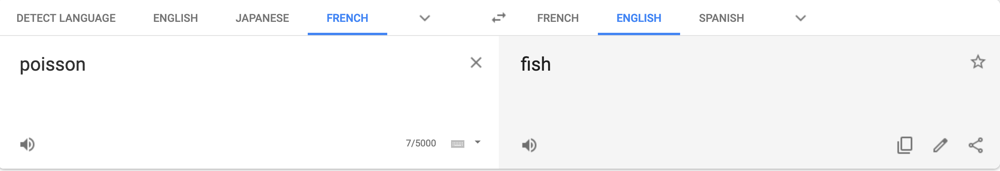
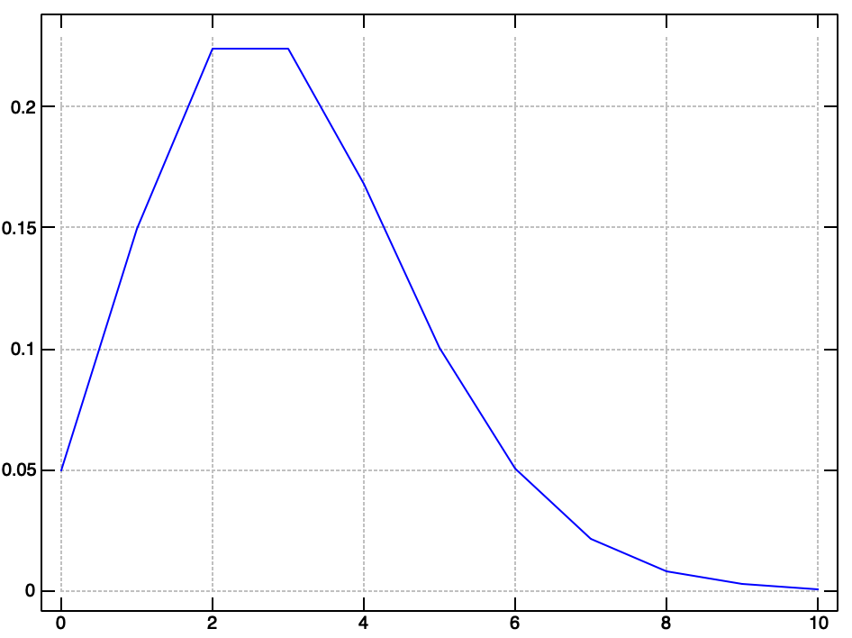

Poisson Distribution in Joy
In probability theory, there are several fundamental distributions that model certain systems. One of these distributions is the Poission distribution.
Named after the brilliant French mathematician Siméon Poisson who published hundreds of seminal works during his life, this distribution is used to model event occurrence.
This distribution has a parameter $\lambda$ which is the first moment of the distribution and represents the average number of events occurring in some given time interval.
The density function is given as $$p(x = k) = \frac{\lambda^ke^{-\lambda}}{k!}$$
This random looking equation is actually a special caseof the Binomial Distribution where the number of trials is large and the probability of a success is small.
The use
There are many interesting problems that can be solved with this distribution (and its conjugate cousin Gamma). A super simple example is to model incoming phone calls to a call service center.
If the call center is open for 12 hours every day, as a data scientist, we are interested in optimally scheduling staff to handle call demand. In a simple, contrived, example lets say we have $n_i$ phone calls in hour $i \in [6, 17]$. This could be given by a simple list [3 4 2 6 8 3 4 8 3 1 2 1] which, when paired with the hour gives [[6 3] [7 4] [8 2] [9 6] [10 8] [11 3] [12 4] [13 8] [14 3] [15 1] [16 2] [17 1]]
The question we wish to answer is "how likely is it that we will receive $n$ phone calls in an hour?" Now, there are more complicated questions to address for the whole scheduling problem, but this is a good start.
Joy to the world
Joy is a purely functional language (produced by Manfred von Thun) based on the composition of functions.
Joy is a stack based, concatenative, language. Programs in Joy are built up, like in standard functional programming, by composing functions together. However, unlike in standard FP, functions in Joy are restricted in a certain way.
Functions ONLY take a stack as input and can ONLY output a stack. All functions operate on the stack. This restriction gives rise to an extremely simple syntax and a powerful mental model for solving a variety of problems.
If, for example, you have a series of numbers you want to aggregate into a list you could do so as follow.
stack. [] 1 2 4 5 3 2 6 7 4 1 3 stack. [3 1 4 7 6 2 3 5 4 2 1]
Here, we are working in the Joy REPL where commands are executed when you type ..
$3$ is currently at the top of the stack. However, if you ask what the first element of your list is you'll raise an error
first. run time error: aggregate parameter needed for first
This is because the stack itself is a list, but the elements on the stack are individual integers.
If, however, we use the cons keyword stack size times to build up a list.
[] stack size [cons] times.
We can then use first. to get $1$ which was the first element we pushed.
Concatenative programming is fairly alien for most imperative programmers at the beginning. However, the ability to reason about your program's side effects is a huge benefit of Joy.
Also, as a quick fun example of stack based programming, we calculate the sum of a list.
[1 2 3] 0 [+] fold 6
This is familiar in a functional world, but wild in a non functional world.
We first push the list [1 2 3] onto the stack. We then push the initial agg element $0$ and the quotation [+]. Then, the fold function takes the initial element and consecutively executes the quotation on the elements of the list at the top of the stack.
Back to the phone
Now, back to our original problem of the call center. Say we want to get the likelihood that our org will receive $4$ phone calls in one hour. Given the data from before [3 4 2 6 8 3 4 8 3 1 2 1] for the aforementioned hours (0600 - 1700) we first would need to estimate the parameter $\lambda$
In our case, that value is $\lambda = 3$. Now, to evaluate the likelihood using the PDF for $k=4$ phone calls we need a few helper functions. First of which is the $!$ factorial operator.
Joy is extremely well suited for recursive computations. Our full implementation of the factorial function is a single line that uses recursion and branching.
DEFINE factorial == [0 =] [pop 1] [dup 1 - factorial *] ifte.
First, notice the DEFINE keyword. This allows us to define functions (even recursively as shown).
Then, jumping all the way to the end of the function we see the keyword ifte which stands for if then else. It requires the first 3 items on the stack to take a certain form [conditional] [if] [else]. When wrapped in [] the value on the stack is called a quotation which can be executed later by the program.
This function essentially checks to see if the element is $0$ if it is, pop, otherwise duplicate the top of the stack and recursively calculate the factorial.
[1 2 3] 0 [+] fold factorial. 720
This then allows us to calculate factorials quickly.
10 factorial. 3628800
Lovely! Now, for the numerator we need to take the power and multiply by the exponential. Luckily Joy has some built in math operations.
3 4 pow. 81
1 exp. 2.71828
Grand finale!
The final Poisson function requires the top two elements of the stack to be $\lambda$ $k$. So, in our example we would push 3 4 onto the top of the stack.
The code is closer to idiomatic Joy and so can be a bit weird to reason about, but essentially we manipulate these two parameter values until the top of the stack is our likelihood value.
DEFINE poisson == [pow] nullary rolldown neg exp * swap factorial /.
Our method first evaluates $\lambda^k$ without removing $\lambda$ or $k$ from the stack. Then it swaps the parameters using rolldown so that the result of the power operation is no longer on the top of the stack.
We then negate $\lambda$ and exponentiate. This leaves three values on the stack. The first is $\lambda^k$ and the second is $e^{-\lambda}$ and the third is $k$ we have saved for the final operation. The first two values are multiplied together, swapped, then we divide by the result of $k!$.
[3 4 2 6 8 3 4 8 3 1 2 1] average 4 poisson.
We can run this file with the proper function definitions and see the likelihood output to the terminal via stdout.
% ./joy poisson.joy 0.168031
In the end
We saw how to construct a probabilistic model given some toy data in Joy. The output of our model can then be used to determine how many people we need to staff to have sufficient call coverage.
For example, we want to know the likelihood for a number of different calls per hour, so we plot the likelihood for 0 to 10 calls.
A quick intuition check says we should staff 8 callers for best coverage (given the likelihood and the max values in our data). If we were worried about cost of headcount we could condition this information with payroll values and make more informed decisions.
The Poisson distribution is a quick way to model questions regarding number of events in a time period (our period was hours). If you are interested in waiting time information you can do similar analysis with the Gamma distribution.
Thanks for reading! Feel free to follow me on twitter or Subscribe for email updates